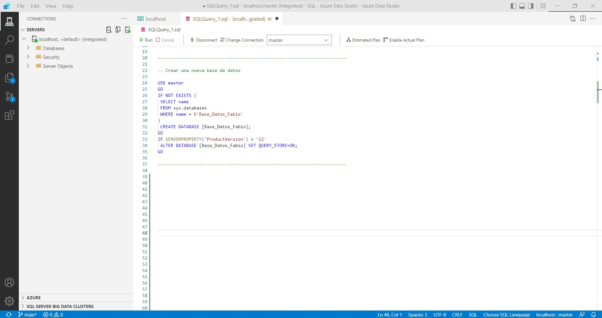
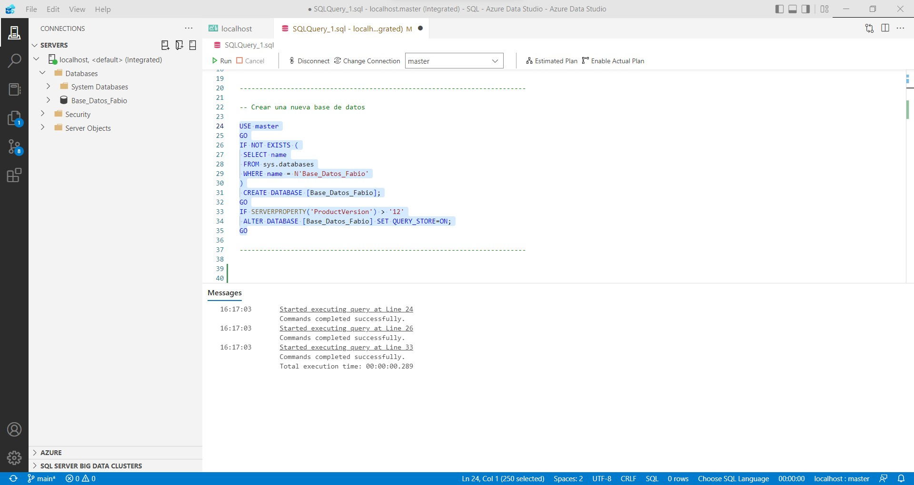

Chapter 3 Crear una nueva base de datos en Azure Data Studio
- Vamos a crear una nueva base de datos, a la que vamos a llamar Base_Datos_Fabio:

El código empleado en la imagen para crear una nueva base de datos es el siguiente:
-- Crear una nueva base de datos
USE master
GO
IF NOT EXISTS (
SELECT name
FROM sys.databases
WHERE name = N'Base_Datos_Fabio'
)
CREATE DATABASE [Base_Datos_Fabio];
GO
IF SERVERPROPERTY('ProductVersion') > '12'
ALTER DATABASE [Base_Datos_Fabio] SET QUERY_STORE=ON;
GOTras la ejecución del codigo SQL anterior se deberia crear la base de datos, y ello deberia reflejarase en la parte izquierda del entorno, tal y como se muestra en la imagen:
